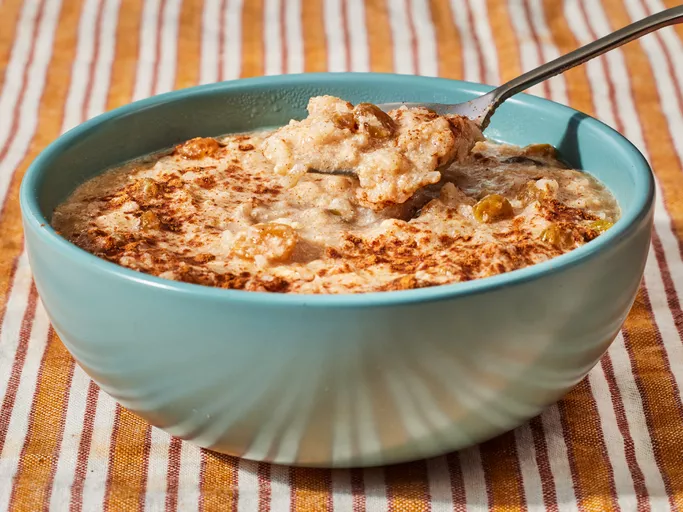

Home
Rice Pudding

Description
This is a simple and fast way to enjoy rice pudding.
Ingredients
- 2 cups cooked white rice
- 1 tablespoon ground cinnamon
- 1 can evaporated milk
- 1/2 cup white sugar
Steps
- Combine the rice, cinnamon, milk and sugar in a saucepan.
- Place it over medium heat.
- Stir occasionally and bring the mixture to a boil, cover and reduce heat to low.
- Cook until thick and creamy, 5-7 minutes.